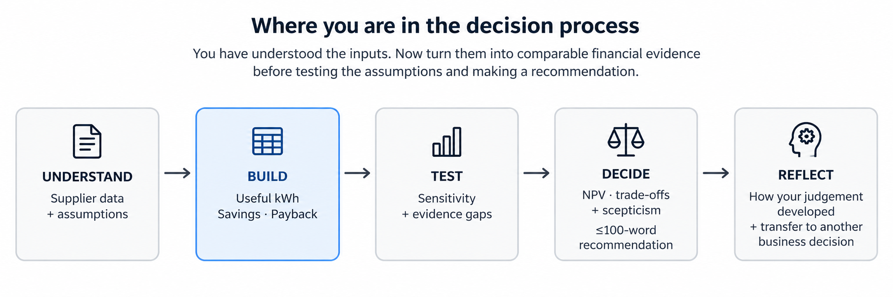

Useful generation — already started
Useful generation = Year-1 generation × self-consumption
Cells: Your Model!B4:D4
System A formula in B4:
='Case Data'!B15*'Case Data'!B16
Copy B4 across to D4. Relative references should change automatically.
Case study · Cape Manufacturing · The Year-1 comparison
The inputs are understood and your first useful-generation calculation is in place. Management now needs the same financial measures for all three proposals.
FD
Monday 09:40 · Financial Director
Show me how much generation we can use, what we save after maintenance and how quickly the initial capital is recovered. Keep the model traceable to the source data.

Stage outcome and evidence
Outcome for this stage: Construct an auditable spreadsheet model that converts operational solar data into comparable Year-1 financial measures.
Evidence: completed Your Model!B4:D7 (optional ranks in row 8), one comparison chart and a one-sentence visual-design rationale.
Microsoft Excel · Build
Excel formatting Select B5:D6 → Home → Number and choose Currency/Accounting. Select B7:D7 and show two decimal places.
Google Sheets compatibility — formatting Select B5:D6 → Format → Number → Currency (or use the currency toolbar button). Select B7:D7 → Format → Number → Number and set two decimal places.
Course guidance · build the comparison
Management needs a common basis for comparison. Build the logic in the Your Model sheet: useful generation → gross saving → net saving → simple payback.
1
Useful generation = Year-1 generation × self-consumption
Cells: Your Model!B4:D4
System A formula in B4:
='Case Data'!B15*'Case Data'!B16
Copy B4 across to D4. Relative references should change automatically.
2
Gross saving = useful generation × tariff
Select Your Model!B5 and enter:
=B4*'Case Data'!$B$4
Copy across to D5. The first reference changes B4 → C4 → D4; the tariff stays locked at Case Data!$B$4.
B5 = R231,840; C5 = R287,980; D5 = R321,048.
A colleague’s formula in Your Model!C5 is =C4*'Case Data'!C4. It should calculate System B’s gross saving. Inspect Case Data!C4: why will this formula fail, and how should you correct it before copying across?
C4 on Case Data contains the unit label, not the tariff. The tariff reference has moved during copying. Use =C4*'Case Data'!$B$4: useful generation remains relative, while the tariff stays fixed. The result should be R287,980. Correct the original formula in B5 too, then inspect D5 after copying.
3
Net saving = gross saving − maintenance
In Your Model!B6 enter:
=B5-'Case Data'!B17
Copy across to D6. Format B6:D6 as rand currency.
B6 = R222,840; C6 = R276,980; D6 = R307,048.
4
Simple payback = installed cost ÷ Net Year-1 saving
In Your Model!B7 enter:
='Case Data'!B13/B6
Copy across to D7. Format B7:D7 to two decimal places.
Your answers should be approximately A = 2.92, B = 2.96, C = 3.22 years. If not, check percentage formats, cell references, subtraction of maintenance, and numerator/denominator.
Optional Excel skill · rank the paybacks
In Your Model!B8 enter:
=RANK.EQ(B7,$B$7:$D$7,1)
Copy across to D8. The final argument 1 means the smallest payback receives rank 1.
System A = 1, System B = 2, System C = 3.
Visual communication task
B3:D3 and payback values B7:D7.Excel Select B3:D3, then add the non-adjacent B7:D7 range using Ctrl (Windows) or ⌘ (Mac). Choose Insert → Column or Bar Chart → Clustered Column.
Google Sheets compatibility The simplest beginner route is to create a small temporary two-row chart source in unused cells (for example H3:J4): copy the three proposal names into row 3 and link row 4 to B7:D7. Select H3:J4 → Insert → Chart → choose Column chart in the Chart editor. This avoids awkward non-adjacent selection.
Write one sentence: “I chose to show ___ because ___.”
Completed: completed Your Model!B4:D7 (optional ranks in row 8) + one chart + one-sentence design rationale.
Next: management challenges an assumption. Test whether your conclusion survives.
Further reading
ACCA — Investment appraisal
Further explanation of discounted cash flows and investment appraisal; the worked example goes beyond this course.
Read the resource ↗
Microsoft Support — Overview of formulas in Excel
Excel formulas, operators and references, including links to other worksheets.
Read the resource ↗
Eskom — Tariffs and charges
South African tariff categories and links to pricing documents; the course tariff remains an illustrative assumption.
Read the resource ↗